Overview
ggguides provides styling functions to customize legend appearance without diving into ggplot2’s theme element hierarchy. The main functions are:
-
legend_style()- Comprehensive styling (fonts, backgrounds, borders) -
legend_keys()- Override key appearance (size, alpha, shape) -
legend_order()- Reorder legend entries -
legend_wrap()- Multi-column/row layouts -
legend_reverse()- Reverse entry order -
colorbar_style()- Customize continuous color bar legends
Font Styling
Font Size
Adjust the overall text size (applies to both title and labels):
p <- ggplot(mtcars, aes(mpg, wt, color = factor(cyl))) +
geom_point(size = 3) +
labs(color = "Cylinders")
p + ggtitle("Default size")
p + legend_style(size = 14) + ggtitle("size = 14")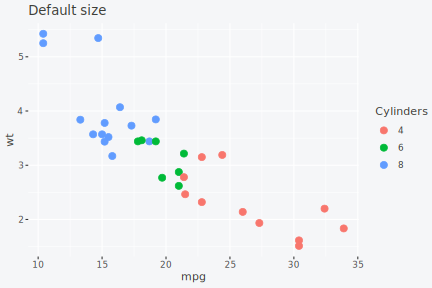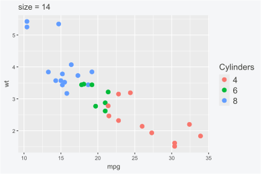
Font Family
Change the font family for legend text:
p + legend_style(family = "serif") + ggtitle("serif")
p + legend_style(family = "mono") + ggtitle("mono")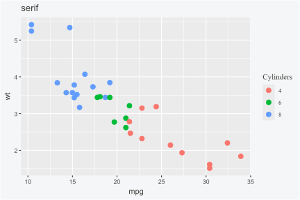
Title Emphasis
Make the title stand out with separate size and face settings:
p + legend_style(
size = 12,
title_size = 14,
title_face = "bold"
)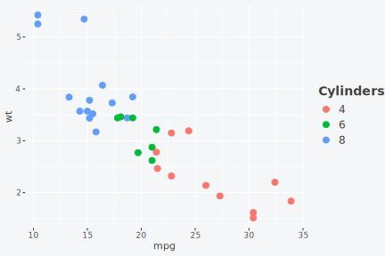
Text Rotation
For legends with long category names, rotate the labels to save space:
Basic Rotation
p_long <- ggplot(mpg, aes(displ, hwy, color = class)) +
geom_point()
p_long + legend_style(angle = 45)
Vertical Labels
Use 90 degrees for fully vertical text. Key height is automatically increased:
p_long + legend_style(angle = 90)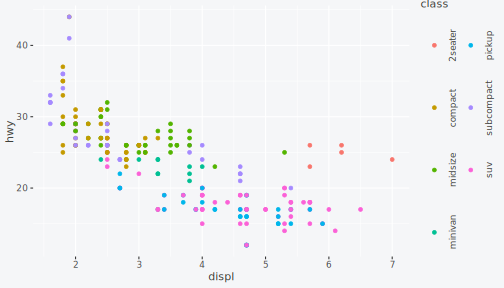
Title Rotation
Rotate the legend title independently:
p_long + legend_style(title_angle = 90, title_hjust = 0.5) + ggtitle("Rotated title only")
p_long + legend_style(angle = 45, title_angle = 90) + ggtitle("Both rotated")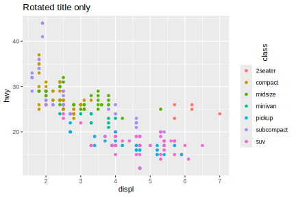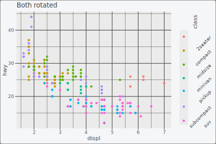
Background and Border
Add visual containers around the legend:
p + legend_style(
background = "#FFF3E0"
)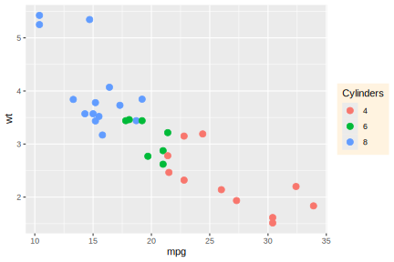
p + legend_style(
background = "#FFF3E0",
background_color = "#FF9800"
)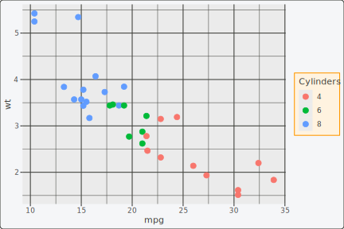
Key Size
Adjust the size of legend keys (color swatches):
p + legend_style(
key_width = 1.5,
key_height = 1.5
)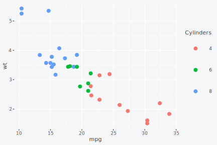
Margin
Control spacing around the legend:
p + legend_style(
background = "#FFF3E0",
margin = 0.5
)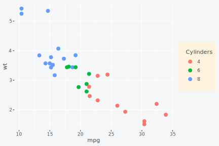
Full Styling Example
Combine all styling options:
p + legend_style(
size = 11,
title_size = 13,
title_face = "bold",
family = "sans",
key_width = 1.2,
background = "#FFF3E0",
background_color = "#FF9800",
margin = 0.3
)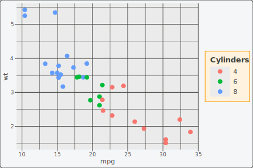
Wrapping Legend Entries
For legends with many entries, legend_wrap() creates
multi-column or multi-row layouts.
With Bottom Position
Wrapping works well with horizontal legends:
ggplot(mpg, aes(displ, hwy, color = class)) +
geom_point() +
legend_wrap(nrow = 2) +
legend_bottom()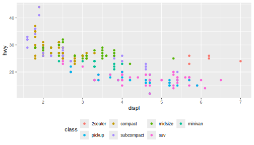
Customizing Legend Keys
When plot aesthetics like small point sizes or low alpha values make
legend keys hard to read, legend_keys() overrides the key
appearance without affecting the plot.
Enlarging Small Points
p_small <- ggplot(mtcars, aes(mpg, wt, color = factor(cyl))) +
geom_point(size = 1) +
labs(color = "Cylinders")
p_small + ggtitle("Small points in legend")
p_small + legend_keys(size = 4) + ggtitle("Enlarged legend keys")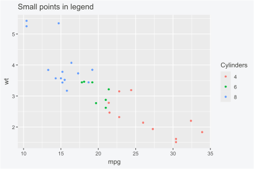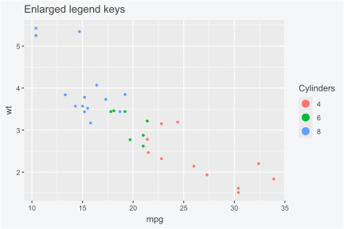
Removing Transparency
p_alpha <- ggplot(mtcars, aes(mpg, wt, color = factor(cyl))) +
geom_point(alpha = 0.3, size = 3) +
labs(color = "Cylinders")
p_alpha + ggtitle("Transparent legend keys")
p_alpha + legend_keys(alpha = 1) + ggtitle("Opaque legend keys")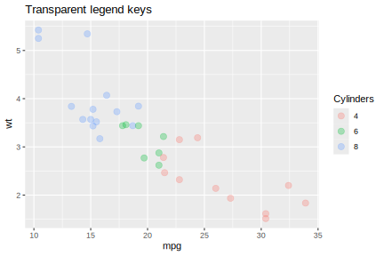
Combining Overrides
ggplot(mtcars, aes(mpg, wt, color = factor(cyl))) +
geom_point(alpha = 0.3, size = 1) +
legend_keys(size = 4, alpha = 1)
Targeting Specific Aesthetics
By default, legend_keys() applies to both colour and
fill legends. Target specific aesthetics with the aesthetic
parameter:
ggplot(mtcars, aes(factor(cyl), mpg, fill = factor(cyl))) +
geom_boxplot(alpha = 0.5) +
legend_keys(alpha = 1, aesthetic = "fill")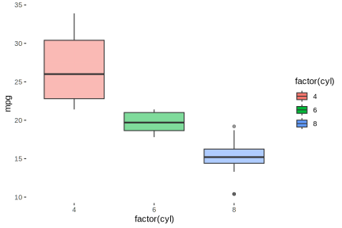
Changing Symbol Shapes
Use named shapes for clarity instead of numeric codes:
p + legend_keys(shape = "square") + ggtitle("Square")
p + legend_keys(shape = "diamond") + ggtitle("Diamond")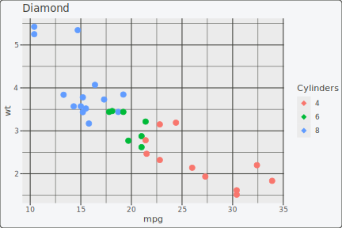
Available shape names include: "circle",
"square", "diamond", "triangle",
"plus", "cross", "asterisk".
Filled Shapes with Outlines
Shapes 21-25 (or names ending in _filled) support both
outline and fill colors, making legends more visible against any
background:
# White fill with colored outline
p + legend_keys(shape = "circle_filled", fill = "white", stroke = 1.5) +
ggtitle("White fill, colored outline")
# Colored fill with black outline
p + legend_keys(shape = "square_filled", colour = "black", stroke = 1) +
ggtitle("Colored fill, black outline")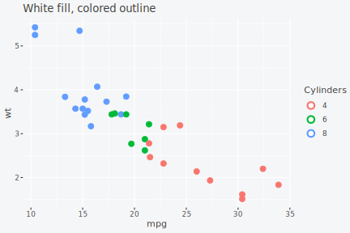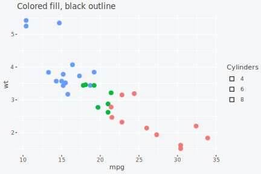
Shape types:
| Type | Shapes | Fill from | Outline from |
|---|---|---|---|
| Outline only |
"circle_open", "square_open",
"diamond_open"
|
N/A | colour |
| Solid filled |
"circle", "square",
"diamond"
|
colour |
N/A |
| Fill + outline |
"circle_filled", "square_filled",
"diamond_filled"
|
fill |
colour |
Reordering Legend Entries
legend_order() changes the order of legend entries
without modifying factor levels in your data.
Using Functions
Apply functions like rev or sort to the
current order:
p + legend_order(rev) + ggtitle("Reversed")
p + legend_order(sort) + ggtitle("Sorted") 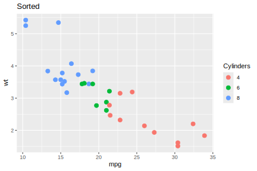
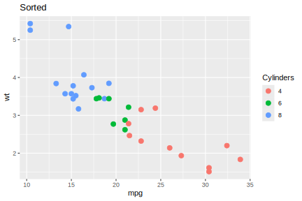
Other Aesthetics
Reorder legends for fill, shape, or other aesthetics:
ggplot(mtcars, aes(factor(cyl), fill = factor(cyl))) +
geom_bar() +
legend_order(c("8", "4", "6"), aesthetic = "fill")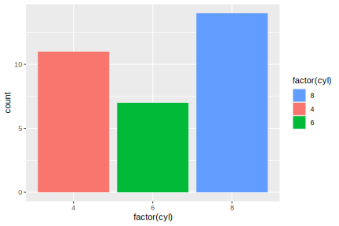
Reversing Legend Order
For simple reversal, legend_reverse() is a convenient
shorthand:
p + legend_reverse()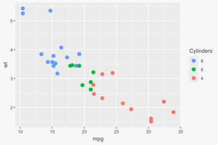
Combining Style Functions
All ggguides functions compose with +:
ggplot(mpg, aes(displ, hwy, color = class)) +
geom_point() +
legend_left() +
legend_style(
size = 11,
title_face = "bold",
background = "#FFF3E0"
)
ggplot(mpg, aes(displ, hwy, color = class)) +
geom_point() +
legend_wrap(ncol = 2) +
legend_bottom() +
legend_style(size = 10, title_face = "bold")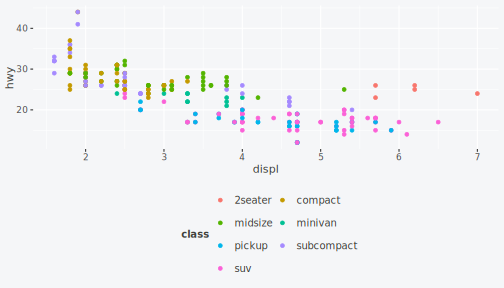
Styling Continuous Color Bars
For continuous scales, colorbar_style() customizes the
color bar appearance.
Basic Usage
p_cont <- ggplot(faithfuld, aes(waiting, eruptions, fill = density)) +
geom_tile()
p_cont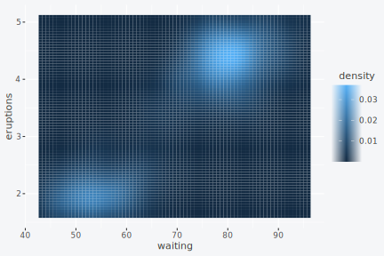
Size Adjustments
Create taller, thinner bars:
p_cont + colorbar_style(width = 0.5, height = 10, aesthetic = "fill")Horizontal Orientation
p_cont + colorbar_style(width = 10, height = 0.5, direction = "horizontal", aesthetic = "fill") +
legend_bottom()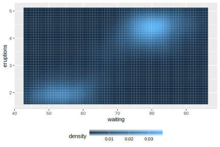 ### Adding a Frame
p_cont + colorbar_style(frame = TRUE, aesthetic = "fill") + ggtitle("Black frame")
p_cont + colorbar_style(frame = "#FF9800", aesthetic = "fill") + ggtitle("Orange frame")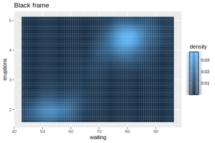
Combined Customization
p_cont + colorbar_style(
width = 0.5,
height = 8,
frame = "#E65100",
ticks_length = 0.3,
aesthetic = "fill"
)Summary
| Function | Purpose | Key Parameters |
|---|---|---|
legend_style() |
Comprehensive styling |
size, title_size, title_face,
family, angle, background,
margin
|
legend_keys() |
Override key appearance |
size, alpha, shape,
fill, colour, stroke,
aesthetic
|
legend_order() |
Reorder entries |
order (vector or function), aesthetic
|
legend_wrap() |
Multi-column layout |
ncol, nrow
|
legend_reverse() |
Reverse entry order | None |
colorbar_style() |
Continuous color bar |
width, height, frame,
ticks, direction
|
Learn more:
- Legend Positioning for placement control
- Patchwork Integration for multi-panel workflows